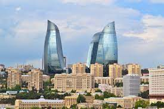

Shaki
Sheki (Şəki) is one of the most beautiful cities of Azerbaijan, dormant among the green forest cushions of the Greater Caucasus Mountains. This small city is located in the Sheki-Zagatala region of the southern picturesque slopes of the Greater Caucasus Range, approximately 325 km west of Baku and close to the border with Georgia. With a population of approximately 63,000 people, Sheki is the most popular tourist destination in Azerbaijan. The city has a rich history, and here you can enjoy the atmosphere of an authentic Azerbaijani city. In addition to the world-famous historical and architectural attractions, tourists also love to walk through the narrow streets of the city and enjoy the distinctive architecture of the city. Houses built from paving stones are laid with red tiles and have carved gates. Almost every house is surrounded by a garden and a fence made of river stones. The etamology of the city's name comes from the name of the ancient tribes that lived in Azerbaijan in the 6th-7th centuries AD. The weather conditions in the region surrounding the mountain forests have a great influence and prevent Sheki from flooding and overheating in the summer. The average annual temperature in Sheki is 12 °C. In June and August the average temperature ranges between 20 and 25 °C. Winters are cold, but heavy snowfall occurs only in January and February. Spring is beautiful when the once brown mountains turn green after the rain and begin to take on color. Summer is mild. Autumn is quite warm during the day, but gets a little chilly as the evening approaches, so be sure to bring a jacket and a thick blanket. The most popular period for traveling here is from May to October. Most of Sheki is located at an altitude of 675 m above sea level, approximately an amphitheater, surrounded by a ring of snowy peaks of the Great Bolshoi, in some places reaching a height of 3000 m. The main rivers of the city are Kish and Gurjana. Sheki is a real miracle of nature, which rises above beautiful alpine meadows and fields. The area around the city is very picturesque, with narrow gorges and green valleys framed by dense forests and mineral water springs along alpine meadows. Sheki is one of the oldest cities in Azerbaijan. Archaeological finds indicate that the city is one of the oldest settlements in the Caucasus, and archaeological finds found on its territory date back to the 5th century BC. Until 1968, the city was called Nukha. Throughout its history, Sheki has fluctuated between independence and foreign domination. In early centuries, Sheki was part of the Albanian kingdom, in which Persians, Romans, Arabs and Mongols traded. In past millennia, Sheki came under the influence and was often directly ruled by Persia or the state of the Shirvanshahs. Soon after the fall of the Safavid Empire in the 18th century, Sheki became the capital of the independent Sheki Khanate, but Sheki's independence did not last long. The Sheki Khanate was included in the Russian Empire at the beginning of the 19th century. The history of Sheki as an urban settlement has hardly been studied. However, information in ancient sources and archaeological finds found throughout the city allows scientists to approximate the founding date of Sheki (2500-2600 years). Sheki in the 5th century was one of the largest cities of the Albanian state. The city was repeatedly attacked, destroyed and looted. In this regard, most of the surviving architectural monuments date back to the 16th-19th centuries.